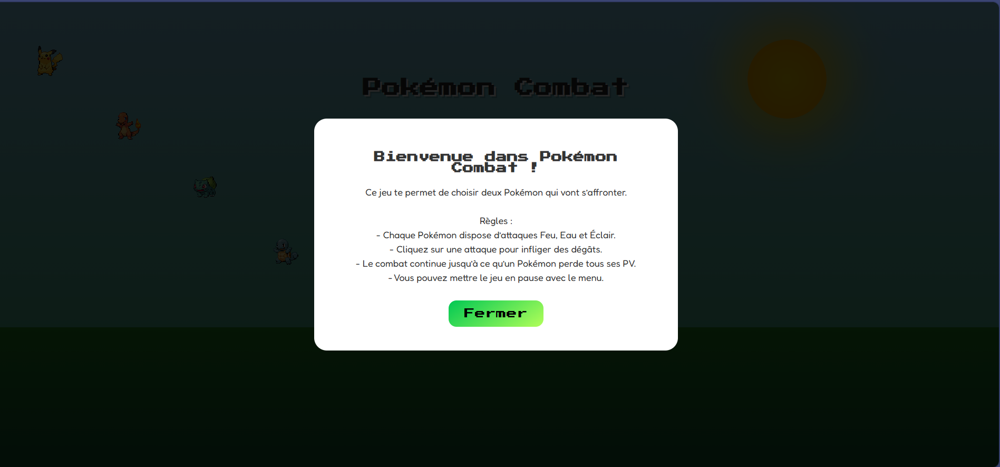
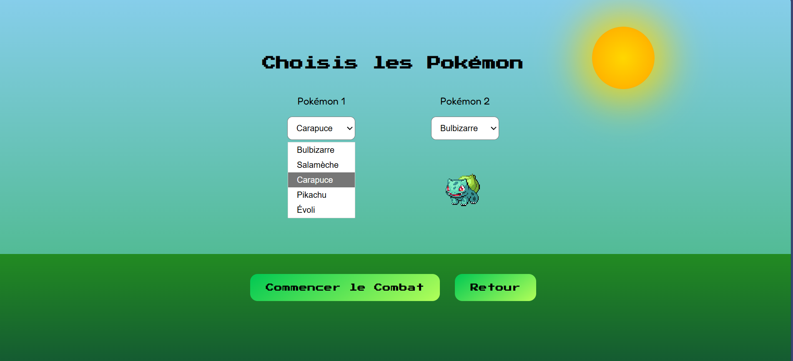
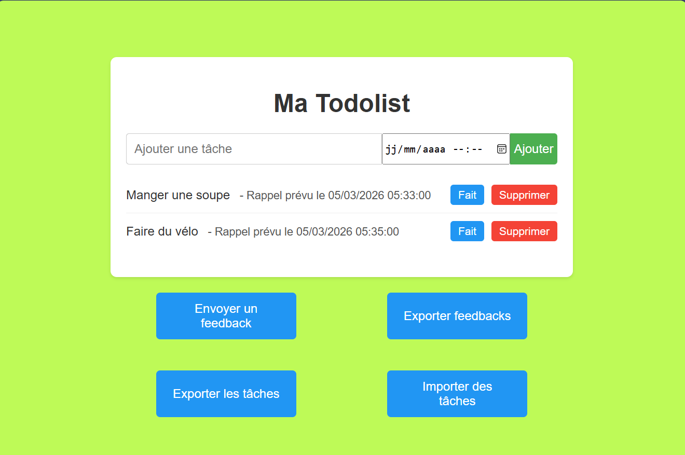
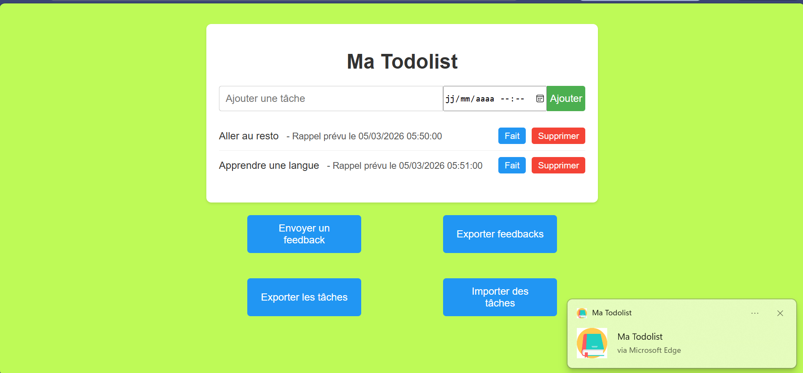
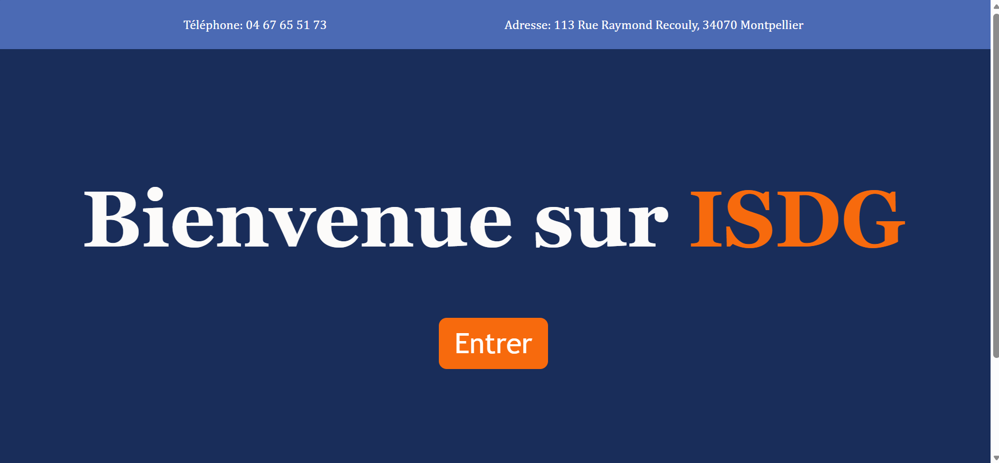
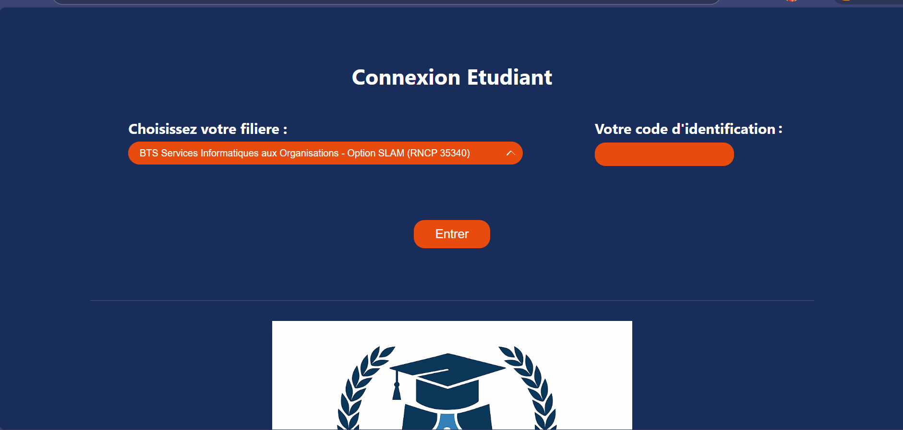
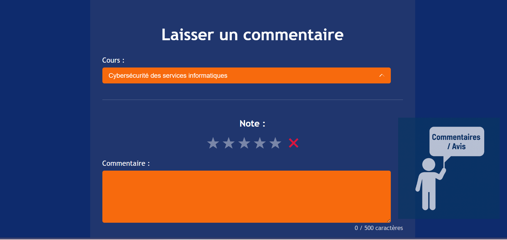

Mes Projets
Projet : Jeu de combat Pokémon
Développement d'une application web interactive pour faire combattre deux Pokémon. Les Pokémon sont récupérés via l’API publique PokéAPI. L’utilisateur peut sélectionner les personnages, lancer différentes attaques et visualiser les animations de combat.
Compétences mises en œuvre
- Gérer le patrimoine informatique
- Répondre aux incidents
- Développer la présence en ligne
- Travailler en mode projet
- Mettre à disposition un service informatique
Ressources du projet
- HTML / CSS / JavaScript
- API REST : PokéAPI
- Images : captures d'écran du jeu
- Vidéo : démonstration du gameplay
Accès au code source
Voir sur GitHub

MaTodolist
Application PWA pour créer et gérer des tâches, avec notifications, sauvegarde locale, export/import, feedback utilisateur et service worker pour utilisation hors ligne.
Compétences mises en œuvre
- Gérer le patrimoine informatique
- Répondre aux incidents
- Mettre à disposition un service informatique
Ressources du projet
- HTML / CSS / JavaScript
- PWA / Service Worker
- Images : captures d'écran de l'application
- Vidéo : démonstration
Accès au code source
Voir sur GitHub


Anonym_Avis&Comment
Application web interne pour que les étudiants déposent des avis anonymes sur les cours ISDG. L'administration peut consulter et analyser les retours pour améliorer la qualité pédagogique.
Compétences mises en œuvre
- Répondre aux incidents
- Développer la présence en ligne
- Travailler en mode projet
- Mettre à disposition un service informatique
Ressources du projet
- HTML / CSS / JS / PHP
- PostgreSQL / Supabase
- GitLab : versionning et hébergement
- Images et vidéos de démonstration
Accès au code source
Voir sur GitHub

